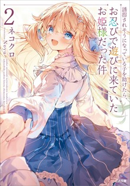

Difficulty:
beginner
Note:
90/100
Title: 誘拐されそうになっている子を助けたら、お忍びで遊びに来ていたお姫様だった件
Roumaji: (yuukai saresou ni natte iru ko wo tauketara, o shinobi de asobi ni kiteita o hime-sama datta ken)
Translation: Saved a girl from kidnapping, turns out she's an undercover princess crashing at my place.
Synopsis:
Kiriyama Seito, an ordinary high school student, happens to witness a kidnapping in the middle of summer vacation.
Seito saves a girl named Luna who is about to be abducted, and ends up staying under the same roof as her, as she has nowhere to go.
As Seito cohabit with Luna, who is beautiful, has an incredible figure, and a cheerful personality, he gradually becomes attracted to her.
Then, on the first day of school, Luna suddenly becomes Seito's classmate as an exchange student.
It turns out that Luna is actually a princess of a certain country, and like Seito so much that she declares in front of everyone being Seito's fiancee!
"I-I only do this with Seito-sama... I wouldn't do it with anyone else..."
A sweet and romantic youth comedy with the refined, pure and innocent princess Luna!
Genres: Romance, comedy, slice of life, iyashikei
Short review:
This is a classic, feel-good romantic comedy light novel (with a manga adaptation) that leans
heavily into sweet, fluffy "princess x ordinary guy" tropes. The story follows high
schooler Seito Kiriyama, who heroically rescues a beautiful girl named Luna from
a kidnapping attempt during summer vacation. Turns out she's actually a refined,
elegant princess from a foreign country sneaking out for some normal fun—and now
she's basically half-living at his place, leading to cozy cohabitation antics.
The charm comes from the heavy flirting, lovey-dovey moments, and Luna's
"only for you, Seito-sama~" devotion once she transfers to his school as an
exchange student. It's packed with heartwarming romance, light humor from
cultural clashes/secret identity stuff, and zero heavy drama—just pure sugar.
If you love low-stakes, wholesome romcoms like certain "saved the girl → she
clings forever" series (think echoes of "Otonari no Tenshi-sama" vibes but
with royalty), this delivers exactly that. It's not groundbreaking or deep,
but it's reliably cute and relaxing. Perfect for when you want zero stress
and maximum "aww" moments.
Rating vibe: 9/10 for fans of the genre; solid comfort read if you're into
elegant princess waifus and sweet teasing.
More details on reading in japanese:
Like all of NekoKuro's light novels, this one is quite easy to read in
Japanese. The main challenge here is the occasional use of "noble"
vocabulary. The princess and her servant speak in keigo (polite/honorific
language), which can be a bit complicated to follow at times, but otherwise,
it's a really straightforward and relaxing slice-of-life story to enjoy.
Detailed section on how to learn and read in japanese